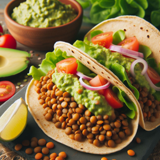

Recetas
Recetas
 Pollo
Pollo
 Pescado
Pescado
 Atun
Atun
 Veganas
Veganas
 Vegetarianas
Vegetarianas
 Quinoa
Quinoa

Tacos de lentejas con aguacate
Tacos deliciosos y llenos de proteína vegetal. Las lentejas se sazonan con especias y se combinan con aguacate para un plato lleno de sabor.
Dificultad
Medio

Personas
4

TOTAL
30MIN
Ingredientes:
- 1 taza de lentejas cocidas
- 8 tortillas de maíz
- 1 aguacate, cortado en cubos
- 1/2 cebolla morada, picada finamente
- 1 tomate, picado
- 1/2 cucharadita de comino
- 1/2 cucharadita de pimentón
- Jugo de 1 limón
- Cilantro fresco al gusto
- Sal y pimienta al gusto
Información nutricional (aproximada por porción):
- Calorías: 350 kcal
- Proteínas: 15 g
- Grasas: 15 g
- Carbohidratos: 40 g
- Fibra: 12 g
A cocinar:
- En una sartén grande, calienta un poco de aceite y sofríe la cebolla durante 2-3 minutos hasta que esté suave.
- Añade las lentejas cocidas, el comino, el pimentón, sal y pimienta. Cocina a fuego medio durante 5-7 minutos, hasta que todo esté bien integrado.
- Calienta las tortillas en un sartén durante 30 segundos por lado.
- Para armar los tacos, coloca una porción de las lentejas en cada tortilla, y agrega el aguacate, el tomate, el cilantro y el jugo de limón por encima.
- Sirve de inmediato.